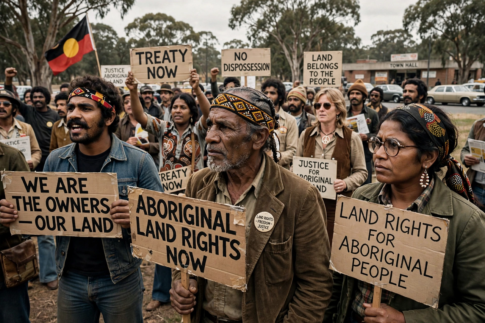

| Aboriginal land rights in Australia | |
|---|---|
 Land rights campaign, 1970s | |
| Key events | 1963 Yolngu bark petitions; 1966 Wave Hill walk-off; 1992 Mabo decision |
| Key legislation | Aboriginal Land Rights (Northern Territory) Act 1976; Native Title Act 1993 |
Aboriginal land rights in Australia concern the rights and interests of Aboriginal and Torres Strait Islander peoples in land and waters, based on their traditional laws and customs and long occupation of the continent before British colonisation in 1788. Colonisation proceeded on the legal fiction of terra nullius — land belonging to no one — which denied Indigenous ownership for over two centuries.
The modern land rights movement grew through the 1963 Yolngu bark petitions protesting mining at Gove, the 1966 Wave Hill walk-off led by Vincent Lingiari, and the 1972 Aboriginal Tent Embassy in Canberra. The Woodward Royal Commission led to the Aboriginal Land Rights (Northern Territory) Act 1976, the first Australian law allowing claims based on traditional occupation, under which roughly half the Northern Territory has been returned to Aboriginal ownership.
In 1992 the High Court's decision in Mabo v Queensland (No 2) rejected terra nullius and recognised native title, finding that the Meriam people's traditional rights survived colonisation. The Native Title Act 1993, passed under Prime Minister Paul Keating, established a claims process. The Wik decision (1996) confirmed native title could coexist with pastoral leases, prompting the Howard government's controversial 1998 amendments.
Land rights remain contested, involving mining access, agreement-making (such as Indigenous Land Use Agreements), and calls for treaty and constitutional recognition, including the unsuccessful 2023 Voice referendum. Sites of cultural heritage such as the Bradshaw (Gwion Gwion) paintings are central to many claims.